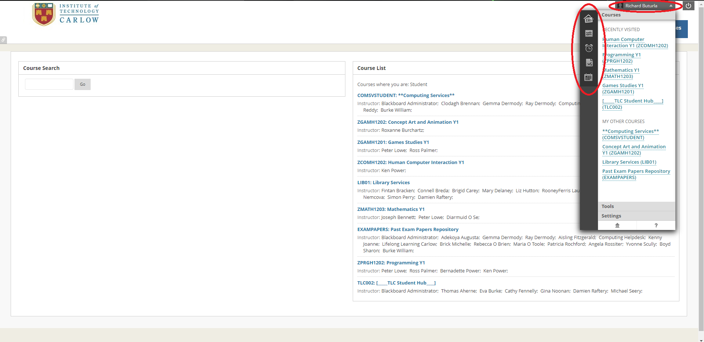
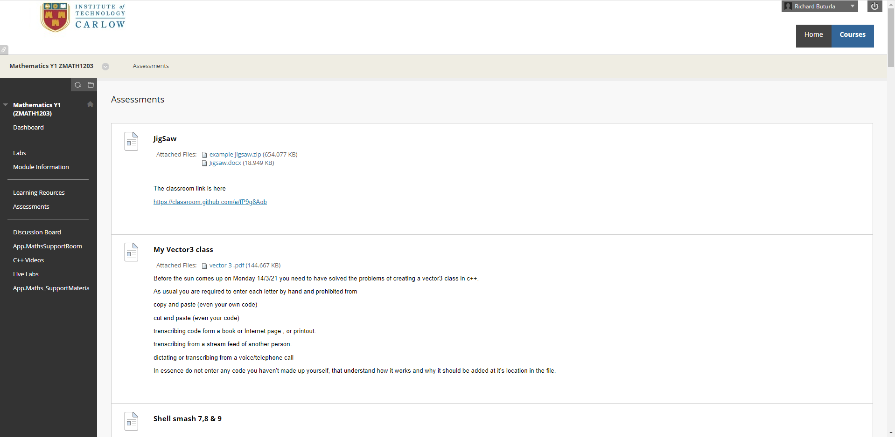
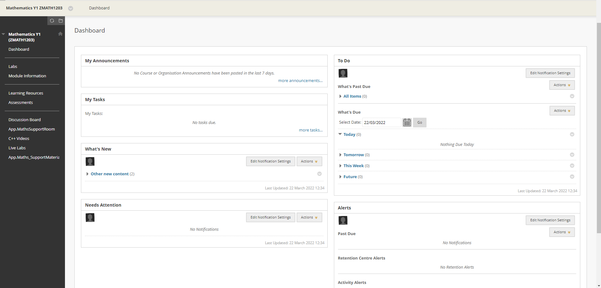
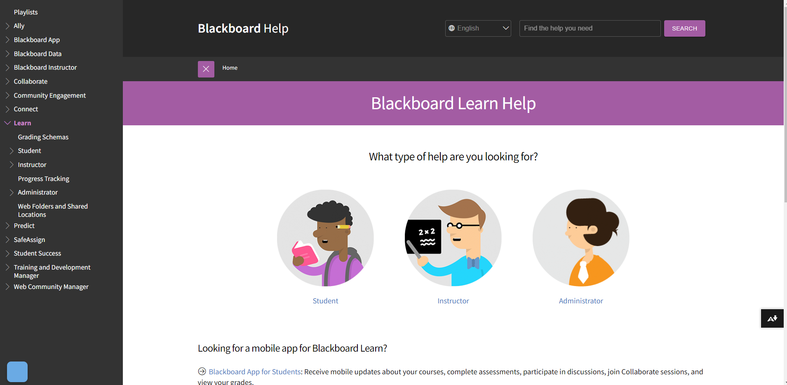
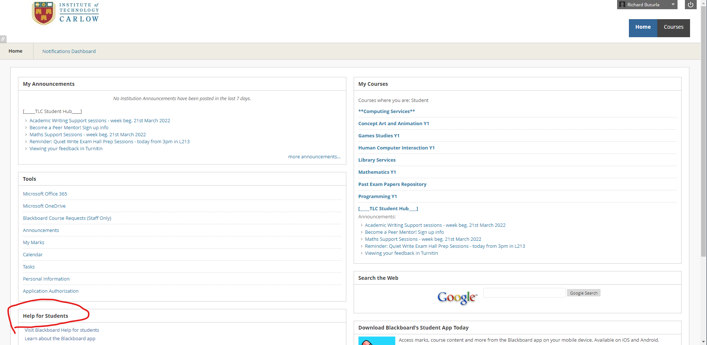
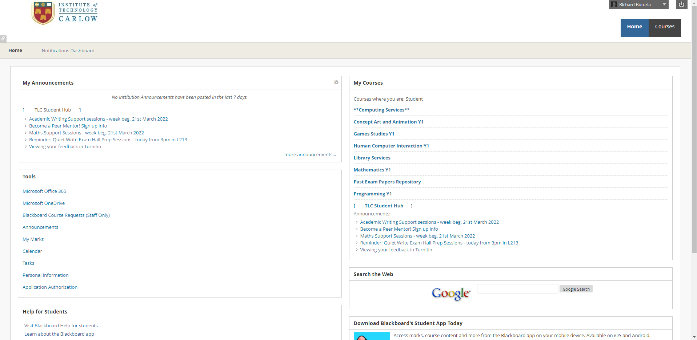

Usability Assessment
Blackboard has a consistency of color. It awlays has white,black,gray and blue colors.
The layout of the website always looks like white board or page, ironic since it is named blackboard.(this is a heuristic too).
The layout of a white background and boxes with blue headings is consistent. The blue color indicating you are about to travel to a more information concentrated page.

When you do click on a blue header on the home page, you are sent to that subjects in depth info. The headings of anything to do with the subject like assessments and labs,
are now in a black box with gray/white text. There are white boxes with "To Do" or "Whats New" headings and blue headings again to go more in depth in those boxes. Once you click on one of the headers inside the black box, you then are met with a simple scroll down page of information.
The website is always consistent with its colors, prompts, menus, boxes and layout.

A counter example of this, is in my opinion, a more hidden list of features and options. On any page, this dropdown option with your name in a box remains
no matter what page you go onto. However, there are some very important elements that are hidden away here. You have a calender,posts, updates, and your marks.
The consistency seems to be lost in this aspect since there are no blue headings and those options are not named. They are presented as images.
A person using this website could get used to the consistency of the page and be lost as to where an important feature like their marks, is hidden away.

The user always needs to feel in control when using a website. Suprises are nice and all, but not when you have an important task at hand.
The user also dont want to delve into a place they dont recognise. And when they do they need a way to return. Blackboard does a perectly fine job
at giving the user a way to return. There is always the home button at the top right of the page no matter where you go. When confused, a user can
go to the main menu screen.
However, there is one aspect of blackboard that does not give freedom or control to the user. When submitting a file for an assigment, you have control
in being able to freely choose and unchoose what to include in a submission. But that is, until you press submit. There seems to be no option to "Un-submit"
something. This is quite bad for giving users control and/or freedom. Users in this case, very much need an emergency "oh no go back" button.
After submitting, you seem to only be able to review or download your submission. This is quite an example of bad user control and freedom.

There are some decent examples of visibility of system status in blackboard. For example, you can go to one of your subjects, pick the
"Assessments" tab, and clearly see that your looking at assessments due to the change of style/layout of that page. Assessments is written at the top
and you can see all your actual assigments in bold below. There is some disparity in layout, color, and font styles.

However, blackboard has a very plain style that can affect this Usability heuristic greatly. The low profile minimalist style texts
that you encounter on the website, are very hard to see. So when you navigate through the website and see texts that look near the same,
you are lost as to what your doing or what part of the website you have arrived at. For example, if you were to look at the centre of the photo,
you would just see text around. There is no clear indicator using color, shapes or borders to cleary communicate to the user that they
are on the dashboard.

Blackboard matches the real world with its system very well. Since lecturers themselves are the ones who create the sub-headings for the students
to find their work, assigments, notes, etc, lackboard leaves this Usability heurstic in a very loose position. For example, only a mathematics
lecturer and students would understand a sub topic called Matrix notes. Others might see and think that in this module, we take notes on the
Matrix movie. However only maths students would be able to understand this which makes for a very good and direct link with matching the blackboard
system and the real world.
Unfortunately, as useful and familiar as this system feels to students who understand the language, terms or concepts that a lecturer
uses, it is also because of the dependancy on the lecturer to make things clear is where this system can fail. A lecturer could assume that
a student understands all the concepts/language of their module and completely confuse and make the student feel lost when navigating through
their module. For example, someone missed out on college due to covid,sickness,etc and navigate through the course module to look through what assignments are due
and see an assignment with next to little explanation and be completely confused.

Blackboard is a website that is almost entirely controlled by the users. Its edited and affected by students,Lecturers, and administrators. So it
is very important to provide documentation and help since the effectiveness of the website is dictated by how well a user interacts with it and how
comfortable it is to use. Blackboard does a good job of this on their help.blackboard website. As soon as you visit thr website, you are presented with many
options to narrow down your issue. For example, the help screen asks wether you are a student, instructor, or an administrator. Once you click on one of these,
you are then presented with the most common issues and popular pages. This clear documentation and ease of access to the help someone may need is a great example
of this usability heuristic.

However easy the help for blackboard is presented and the solution to an issue that a user may come across are made with ease of access, getting to the
help page is another story. The help that a student or staff may need is not clearly given as an option. For example, on the Home screen, there is quite an
amount of text to read through. The overwhelming amount of options hides the help option and makes this usability heuristic fall short. Help and documentation
should be easy to search or find, and on blackboard it seems to be camouflaged in the bottom left corner of the home screen. Users may feel frustrated trying
to operate and use blackboard and this so needed help option is hidden away.

In my opinion, blackboard is one the most minimalist style websites I have seen. The website is not there to look nice, its there to provide every possible
bit of information you need when you use it. Related options are separated into their own boxes, different texts/colors/styles for different headings or information.
Courses are bold and in dark blue, where as other options are light blue with a thin font style. There are next to no pictures to distract the user, and
the use of a white background with blue,black or gray text work well together and things stand out for the user to clearly see when they focus in on
an option or heading. Most of the tasks carried out in blackboard can be accessed thorugh the Home page and gives you this no nonsense interactivity.

While blackboard hardly uses bright,vibrant colors to make their website look nice and stick to minimalism, there are some aspects of the aesthetic and options
that I believe distract users from their priorities and take up space of the screen. On desktop, the website has a search google option. In my opinion this ruins
the aesthetic of the website and the minimalist design. You can just as easily open up another tab on your browser to acomplish another task.
This search bar has taken up space that could have been replaced by the "Help for Staff" header that a user must scroll down to.

Blackboards minimalistic and simple design very much tailors to this heuristic relating to Flexibility and Efiiciciency of use. There is more than one way of
accessing certain parts of the website like your own grades or assessments, etc. Blackboard itself has built in Flexibility. The user has their own blackboard
website which would be certainly different to others depending on thier studies and teachers/lecturers. This means unnecessary information is not shown to the user.
This is a great example of efficiency of use from the design standpoint of blackboard. The design of the shortcuts within blackboard are very much just as fast
as the others. Here you can see the dropdown beside the name of the user with the headings,"Recently Visited". This is one of the shortcusts to get back on
to whatever you focus on most and is obvious how to use once a user has discovered this option. This a great example of flexibility and efficiency tailored to
both experienced and non-experienced users.

However efficient and flexibility the design of the website is for every individual, there is practically no flexibility for customisation. The user doesent have that
flexibility to change arrangements of headings, fonts, colors, etc. The only options for some customisation include changing text size through browser settings or
changing styles from/to BlackBoard styles/Operating System Styles. These options have little, to no affect. In a website,
Personalisation is done by the system. Here blackboard has it to do with the content of the website which we have mentioned is tailored to an individual.
Customisation is done by the user and as mentioned, there is little to no customisation. The user must accustom themselves to the design and work in line with
blackboard. This is an exmaple of the lack of flexibility in terms of customisation.